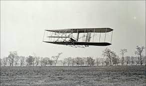

1903-ra a Wright fivérek valószínűleg a világ legképzettebb vitorlázó pilótái lettek. 1903-ban építették meg a Wright Flyert, amelyre később Flyer I-ként hivatkoztak. Ez a gép manapság Kitty Hawkként is ismert. A gépet faragott légcsavar és a Taylor által Daytonban, a bicikliműhelyben épített motor hajtotta.
repülőgép a levegőnél nehezebb olyan közlekedési eszköz, mely a légkörben halad, merev felületei és a levegő reakcióerejéből keletkező felhajtóerő segítségével a repülési magasság és irány megváltoztatására, illetve megtartására képes motor vagy hajtómű segítségével.